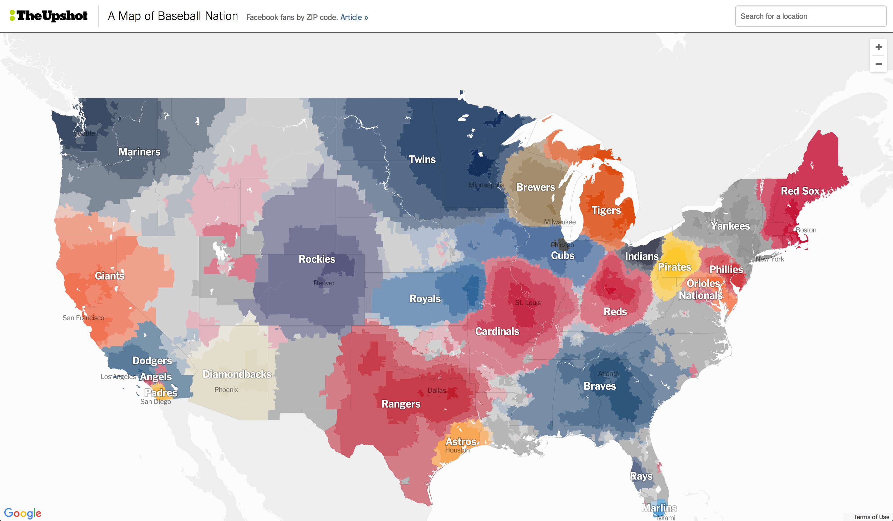
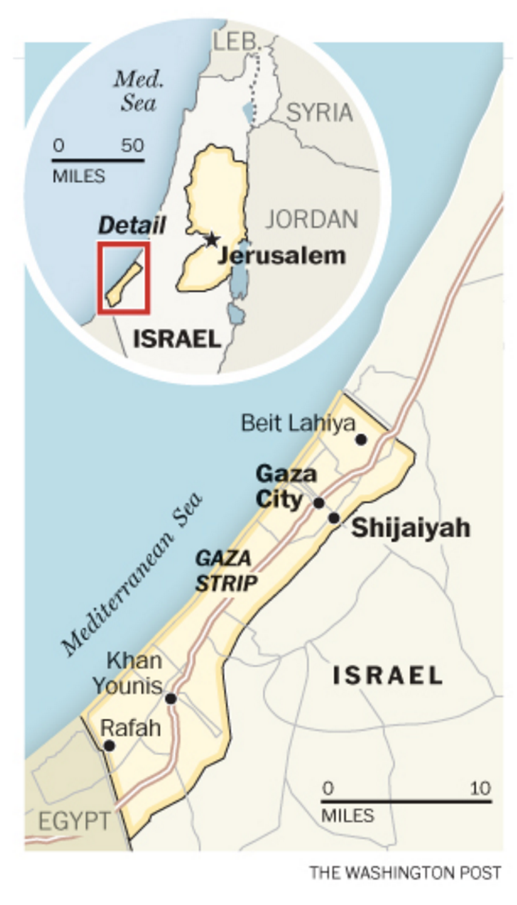
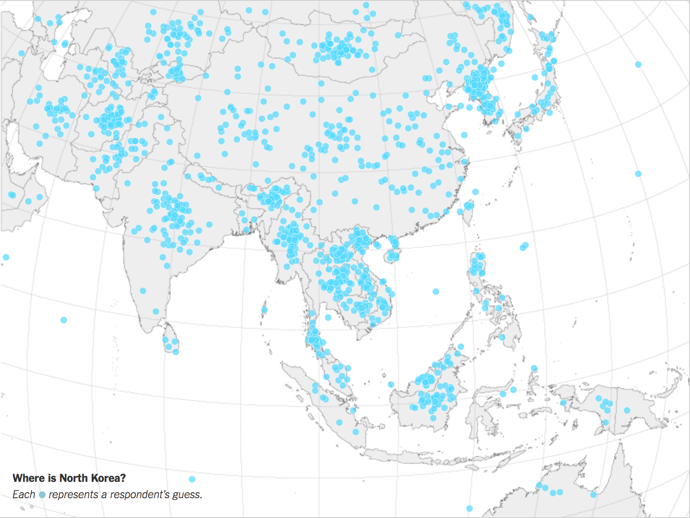
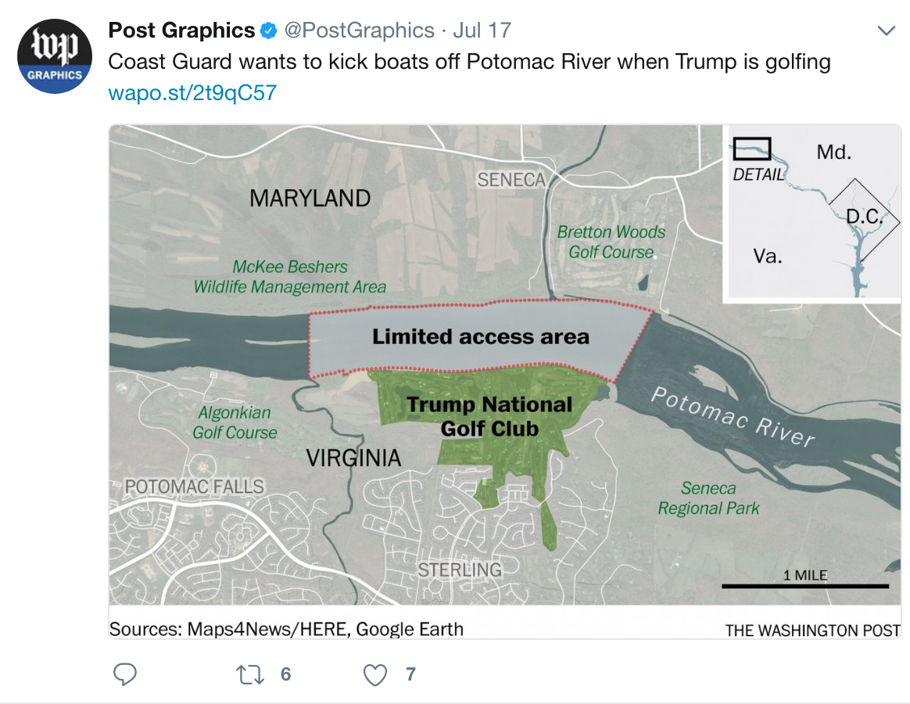
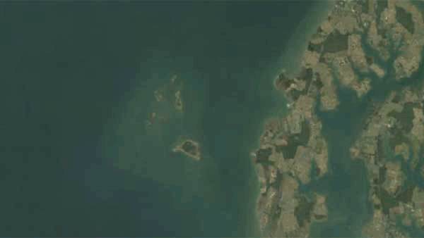
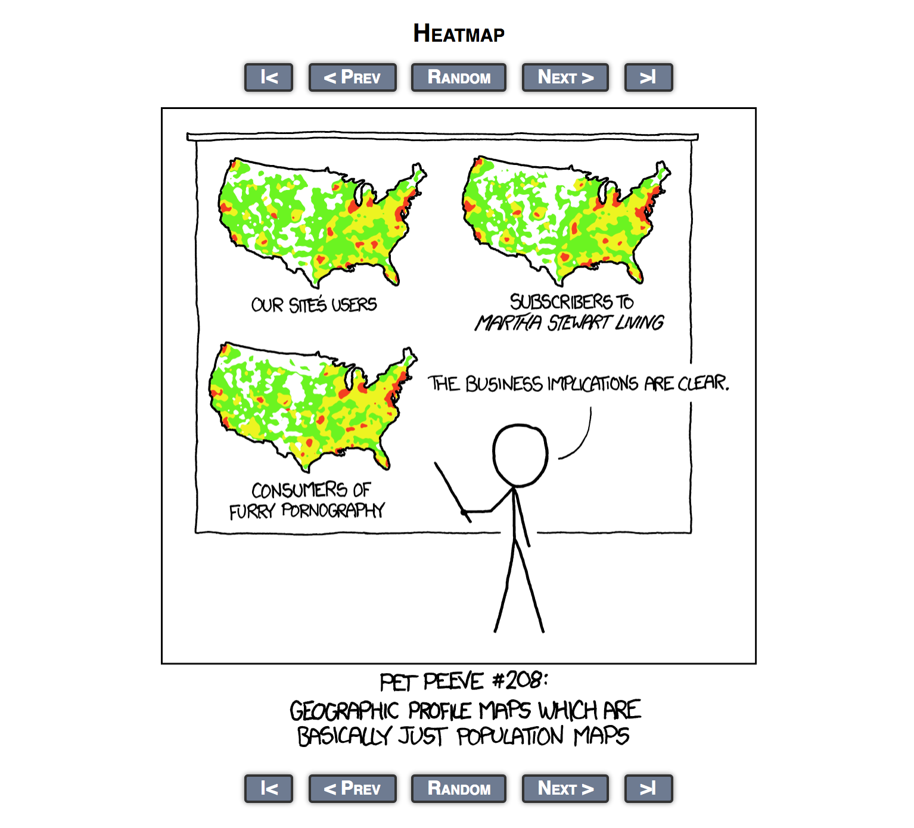

Maps and News
Maps are not new...

Source: NYT archive, 1862.
...but they have become more interesting
Source: NYT Upshot, 1862.
What are maps good for?
Spatial orientation
Revealing geographic differences
Revealing geographic changes
Spatial orientation - Location
Source: Washington Post
Spatial orientation - Location
Source: New York Times
Spatial orientation - Size

Source: New York Times
Spatial orientation - Size & Location
Source: Washington Post
Spatial orientation - Distance & Personalization

Source: New York Times
Revealing geographic differences

Source: New York Times
Revealing geographic differences

Source: New York Times
Revealing geographic differences

Source: New York Times
Revealing geographic differences

Source: New York Times
Revealing geographic differences

Source: New York Times
Revealing geographic changes

Source: Washington Post
Revealing geographic changes
Source: CNSMaryland.org
Revealing geographic changes

Source: LA Times
Building effective maps
Building effective maps
Guide user to a clear editorial point
Simple, but not dumb
Use text to provide context
Don't mislead with geography
Misleading with Maps
Misleading with Maps - Size
Source: New York Times
Misleading with Maps - Size

Source: 538
Misleading with Maps - Population
Source: XKCD